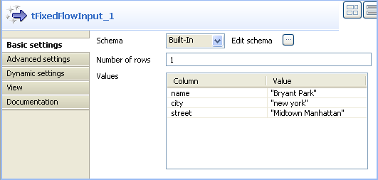
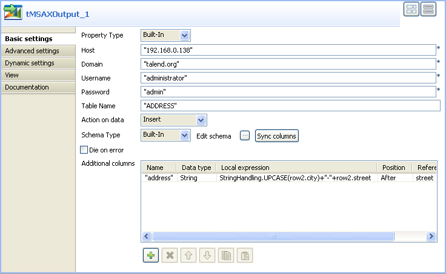
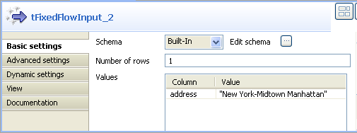
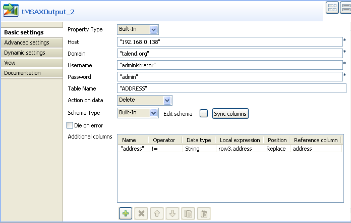
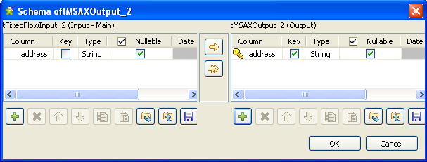

|
Famille de composant |
Business/ Microsoft AX | ||||
|
Fonction |
Le composant tMSAXOutput se connecte au serveur MicrosoftAX. | ||||
|
Objectif |
Ce composant permet d’écrire les données d’un serveur MicrosoftAX. | ||||
|
Basic settings |
Property type |
Peut être Built-in ou Repository. | |||
|
|
|
Built-in : Propriétés utilisées ponctuellement. | |||
|
|
|
Repository : Sélectionnez le fichier où sont stockées les propriétés du composant. Les champs suivants sont alors pré-remplis à l’aide des données collectées. | |||
|
|
Host |
Adresse IP du serveur. | |||
|
|
Domain |
Saisissez le nom de domaine sur lequel est hébergé le serveur MicrosoftAX. | |||
|
|
Username et Password |
Saisissez les informations d’authentification de l’utilisateur. | |||
|
|
Table Name |
Nom de la table à écrire. | |||
|
|
Action on data |
Vous pouvez effectuer n’importe quelle opération sur les données d’un serveur MicrosoftAX. Insert : Ajouter de nouvelles entrées à la table. Le Job s’arrête lorsqu’il détecte des doublons. Update : Mettre à jour les entrées existantes. Insert or update : Ajouter des entrées ou mettre à jour les entrées existantes. Update or insert : Mettre à jour les entrées existantes ou en créer si elles n’existent pas. Delete : Supprimer les entrées correspondantes au flux d’entrée.
| |||
|
|
Schema et Edit Schema |
Un schéma est une description de lignes, i.e., il définit le nombre de champs qui sont traités et passés au composant suivant. Le schéma est soit local (built-in) soit distant dans le Repository. Cliquez sur Edit Schema pour modifier le schéma.
| |||
|
|
Die on error |
Cette case est cochée par défaut et stoppe le Job en cas d’erreur. Décochez cette case pour terminer le traitement avec les lignes sans erreurs, et ignorer les lignes en erreur. Vous pouvez récupérer les lignes en erreur, si vous le souhaitez. Pour cela, utilisez un lien Row > Rejects. | |||
|
|
Additional columns |
Cette option vous permet d’utiliser des expressions locales afin d’effectuer des actions sur les colonnes. Par exemple, vous pouvez modifier les valeurs dans la table sélectionnée : Quand vous mettez à jour ou que vous effacez des données dans une colonne, cette option vous fournit d’autres possibilités concernant les clauses WHERE en utilisant différents opérateurs de la colonne Operator. Name : nom de la colonne du schéma devant être modifiée ou insérée comme nouvelle colonne. Operator : sélectionnez dans la liste l’opérateur que vous souhaitez utiliser avec la clause WHERE.
Data type : type de données. Local expression : type d’expression locale qui sera exécuté afin de modifier ou insérer la colonne de données correspondante, par exemple row1.[row name]. Ou bien appuyez sur Ctrl+Espace et sélectionnez une variable de contexte dans la liste. Position : sélectionnez dans la liste Before, After ou Replace, suivant l’action que vous voulez exécuter dans la colonne de référence. Reference column : type, dans une colonne de référence, que le composant peut utiliser pour insérer/remplacer la nouvelle colonne ou la colonne modifiée. | |||
|
Advanced settings |
tStatCatcher Statistics |
Cochez cette case pour collecter les données de log au niveau du composant. | |||
|
Utilisation |
Ce composant est généralement utilisé en tant que composant de sortie. Un composant de début est nécessaire. | ||||
|
Limitation |
n/a | ||||
![[Avertissement]](../images/warning.png) | |
Avant de pouvoir utiliser ce composant, vérifiez que vous avez installé et lancé le serveur Microsoft AX correctement. |
Ce scénario décrit un Job à deux composants qui utilise le composant tMSAXOutput afin d’insérer une ligne dans une table définie stockée sur un serveur Microsoft AX et modifie ensuite les valeurs dans l’une des colonnes insérée.
Glissez le composant tFixedFlowInput ainsi que le tMSAXOutput de la Palette dans l’espace de modélisation.
Connectez les composants à l’aide d’un lien Row de type Main.
Double-cliquez sur le tFixedFlowInput afin d’afficher la vue Component et de définir ses propriétés.
Sélectionnez le mode Built-In dans le champ Schema et cliquez sur le bouton [...] du champ Edit schema afin d’afficher une boîte de dialogue qui vous permettra de définir le schéma d’entrée.
Cliquez sur le bouton [+] vert pour ajouter des colonnes dans le schéma d’entrée, trois dans cet exemple, name, city et street (nom, ville et rue).
Cliquez sur OK pour fermer la boîte de dialogue. Une nouvelle boîte de dialogue s’ouvre et vous demande si vous voulez propager les modifications, cliquez sur Yes (Oui). Les colonnes du schéma s’affichent automatiquement dans le tableau Values.
Cliquez sur la colonne Value et saisissez une valeur pour chaque colonne d’entrée.
Double-cliquez sur le tMSAXOutput pour ouvrir la vue Component et définir ses propriétés.
Sélectionnez le mode Built-In dans le champ Property Type.
Dans le champ Host, saisissez l’adresse IP du serveur MicrosoftAX et, dans le champ Domain, saisissez le nom du domaine qui héberge le serveur MicrosoftAX.
Entrez votre nom d’utilisateur et votre mot de passe de connexion au serveur dans les champs correspondants, puis, dans le champ Table Name, saisissez le nom de la table dans la quelle vous souhaitez écrire des données.
Dans la liste Action on data, sélectionnez l’action que vous désirez exécuter, Insert dans cet exemple.
Cliquez sur Sync columns pour retrouver le schéma du composant précédent.
Dans cet exemple, le but est de retrouver les trois colonnes d’entrée : name, city et street (nom, ville et rue) et d'écrire les données comprises dans les trois colonnes d'entrée du serveur MicrosoftAX sans effectuer de modification.
Si nécessaire, cliquez sur le bouton [...] du champ Edit schema afin d’ouvrir une boîte de dialogue qui vous permettra de vérifier le schéma retourné.
Dans le tableau Additional columns, cliquez sur le bouton [+] afin d’ajouter une ligne dans laquelle vous pouvez définir les paramètres de la nouvelle colonne à ajouter à la ligne que vous souhaitez écrire dans la table ADDRESS.
Définissez un nom, un type de données, une position et une colonne de référence dans les colonnes correspondantes de la ligne ajoutée.
Dans cet exemple, ajoutez une nouvelle colonne nommée "address" après la colonne "street".
Cliquez sur la colonne Local expression et appuyez sur Ctrl+Espace sur votre clavier pour ouvrir la liste des variables de contexte et sélectionnez :
StringHandling.UPCASE(row2.city)+”-”+row2.street. Cette expression écrira le nom de la ville avec la première lettre en majuscule, suivi du nom de la rue, pour former l’adresse du Bryant park. La colonne address de cet exemple contiendra donc la chaîne de caractères suivante : New York-Midtown Manhattan.
Sauvegardez votre Job et appuyez sur F6 pour l’exécuter.
Le tMSAXOutput insère dans la table ADDRESS du serveur MicrosoftAX une ligne contenant les trois colonnes d’entrée name, city et street, en plus de la nouvelle colonne address qui contient à la fois le nom de la ville et le nom de la rue.
| |
Avant de pouvoir utiliser ce composant, vérifiez que vous avez installé et lancé correctement le serveur MicrosoftAX. |
Ce scénario décrit un Job à deux composants qui utilise le tMSAXOutput dans le but d’effacer toutes les lignes d’une table définie qui ne correspondent pas aux données contenues dans la colonne clé sur un serveur MicrosoftAX.
Dans cet exemple, le schéma d’entrée que vous utilisez est une colonne address (adresse) qui contient les données suivantes : New York-Midtown Manhattan. Vous allez effacer du serveur MicrosoftAX toutes les adresses qui ne sont pas identiques à celle-ci.
Glissez les composants tFixedFlowInput et tMSAXOutput de la Palette dans l’espace de modélisation graphique.
Connectez les deux composants à l’aide d’un lien Row de type Main.
Double-cliquez sur le tFixedFlowInput pour afficher sa vue Component et définir ses propriétés.
Sélectionnez le mode Built-In dans le champ Schema et cliquez sur le bouton [...] du champ Edit schema pour ouvrir une boîte de dialogue où vous pourrez définir le schéma.
Cliquez sur le bouton [+] et ajoutez les colonnes d’entrée du schéma, address dans cet exemple.
Cliquez sur OK pour fermer la boîte de dialogue. Les colonnes du schéma s’affichent automatiquement dans la liste Values.
Cliquez sur la colonne Value et saisissez une valeur pour la colonne d’entrée.
Double-cliquez sur le tMSAXOutput pour ouvrir sa vue Component et définir ses propriétés.
Sélectionnez le mode Built-In dans le champ Property Type.
Dans le champ Host, saisissez l’adresse IP du serveur MicrosoftAX.
Dans le champ Domain, entrez le nom du domaine qui héberge le serveur MicrosoftAX.
Saisissez votre nom d’utilisateur et votre mot de passe de connexion au serveur dans les champs correspondants.
Dans le champ Table Name, saisissez le nom de la table dans laquelle vous voulez supprimer des données, ADDRESS dans cet exemple.
Dans la liste Action on data, sélectionnez l’action que vos souhaitez exécuter, Delete dans cet exemple.
Cliquez sur Sync columns pour retourner le schéma du composant précédent. Dans cet exemple, l’objectif est de récupérer la colonne d’entrée address.
Cliquez sur le bouton [...] du champ Edit Schema pour ouvrir la boîte de dialogue dans laquelle vous pouvez vérifier le schéma récupéré.
Dans le schéma de sortie, cochez la case Key (clé) à côté du nom de la colonne puis cliquez sur OK pour valider les changements et fermer la boîte de dialogue.
![[Note]](../images/note.png)
Lorsque vous sélectionnez l'action sur les données Delete, vous devez définir la colonne de référence Reference column comme colonne clé afin que le tMSAXOutput supprime les lignes à partir de cette colonne clé.
Dans le tableau Additional columns, cliquez sur le bouton [+] pour ajouter une ligne et définir les paramètres que le composant utilisera comme base pour l’opération d’effacement.
Saisissez un nom (name), un opérateur (operator), un type de données (data type), une expression locale (local expression), une position (position) et une colonne de référence (reference column) dans les colonnes correspondantes à la ligne que vous venez d’ajouter.
Dans cet exemple, l’objectif est d’effacer de la table ADDRESS du serveur MicrosoftAX toutes les lignes dans lesquelles la colonne Address n’est pas identique à l’adresse dans la colonne clé address,
New York-Midtown Manhattan.Quand vous sélectionnez l'option Delete, vous devez toujours paramétrer Position à Replace. Sinon, les paramètres du tableau Additional columns ne seront pas pris en compte lors de l'exécution de votre Job.